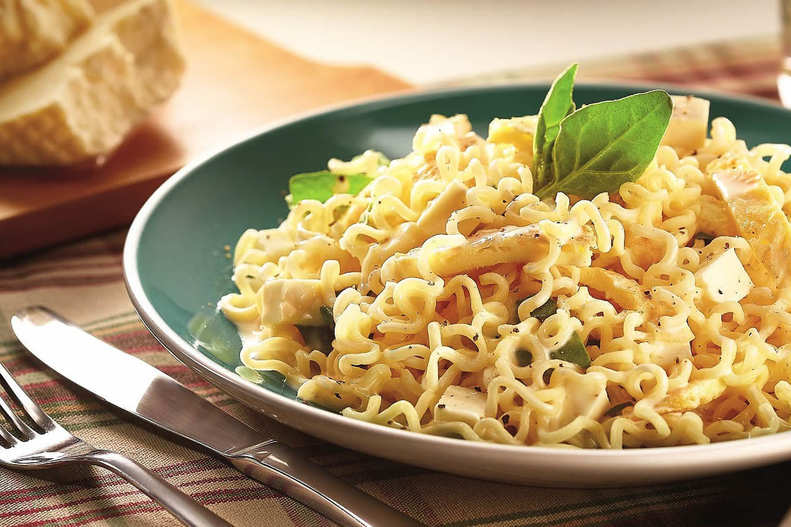

Noodles online
Peça o seu agora!
Encomendas práticas e rápidas
Cardápio do dia
-
- Miojo com tofu
- Miojo de salsichas vegetais
- Miojo ao Shoyo
- Miojo com hortaliças
- Miojo com enchimentos vegetais
- Noodles vejetarianos
- Miojo com ovos
- Miojo com pães integrais
- Miojo com legumes
- Miojo com hambúrger vejetariano
- Noodles com carnes
- Miojo com carne moída
- Miojo com costela
- Miojo com frago
- Miojo com atum
